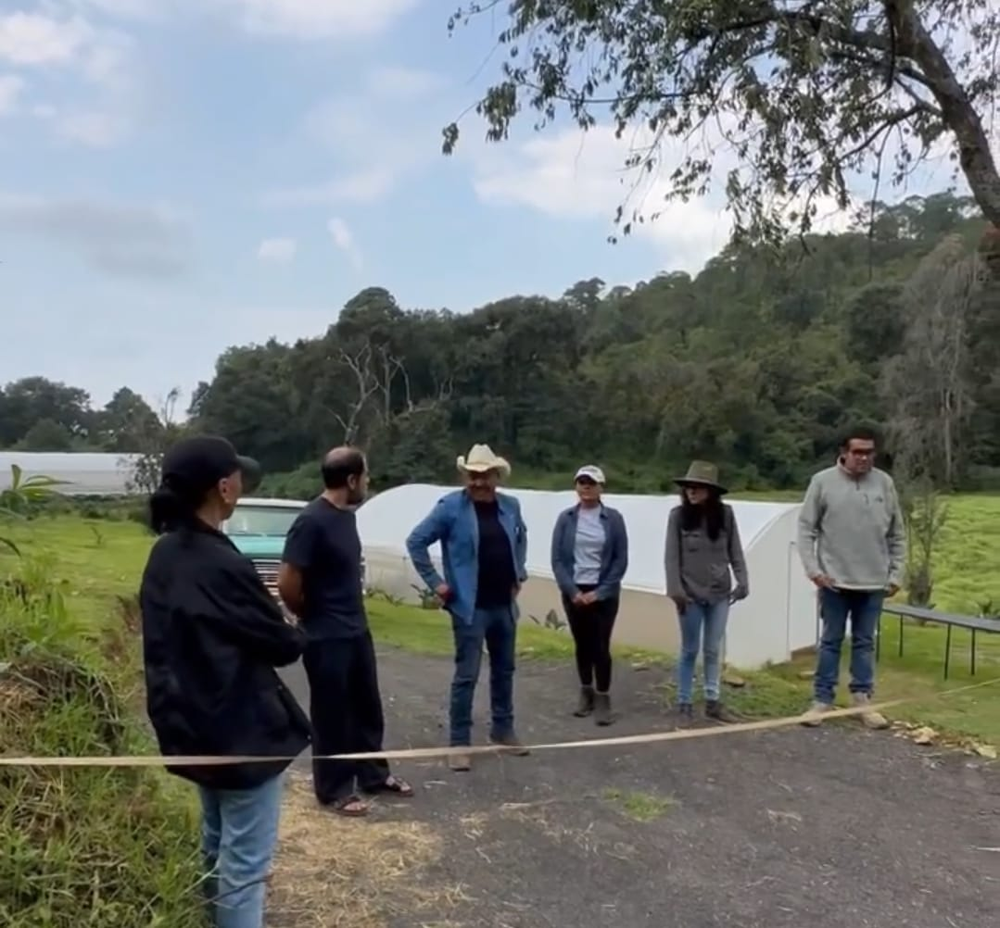

Mil Huertas se funda con el propósito de compartir la experiencia y los conocimientos del cultivo responsable, con diversos talleres y experiencias en San Bartolo Amanalco.
Se fundó por Orlando Reyes con el propósito de que sus visitantes conoieran más sobre la producción responsable de los alimentos en Valle de Bravo. Mil Huertas privilegia la calidad sobre la cantidad en sus cultivos, y labora también como proveedor para diversos restaurantes en la CDMX.
 
Auqnue su inauguración es un poco recient , el proyecto ya tiene disponibles variedades de experiencias y talleres educativos , como para participar activamente en el proceso de cultivo de sus alimentos, aprendiendo el paso a paso desde la selección de las plántelas, su siembra, la preparación de la tierra y las técnicas de cosecha. Cada experiencia invita a reconectarte con la naturaleza y muestra alternativas de hábitos autosustentables. Mil huertas es un lugar para todos en esta experiencia nos acompañan nuestros amigos peludos (mascotas).
.jpeg)